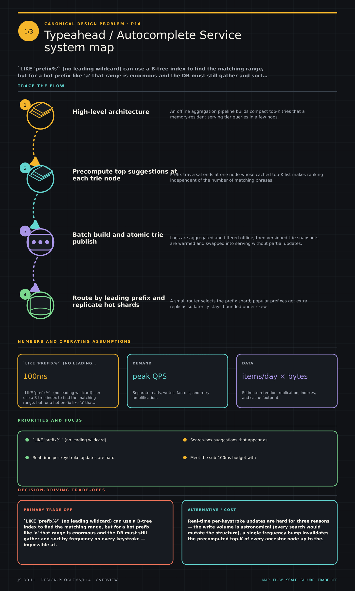

https://frosty110.github.io/js-drill/assets/system-design/infographics/design-problems/p14/overview.pngLIKE 'prefix%' (no leading wildcard) can use a B-tree index to find the matching range, but for a hot prefix like 'a' that range is enormous and the DB must still gather and sort by frequency on every keystroke — impossible at hundreds of thousands of QPS within 100ms.
Search-box suggestions that appear as the user types, in under ~100ms. The signature structure is a trie of prefixes where each node caches its precomputed top-K completions, so a lookup is O(prefix length) rather than a ranking query at request time.
All questions, model answers and diagrams for Design a Typeahead / Autocomplete Service →